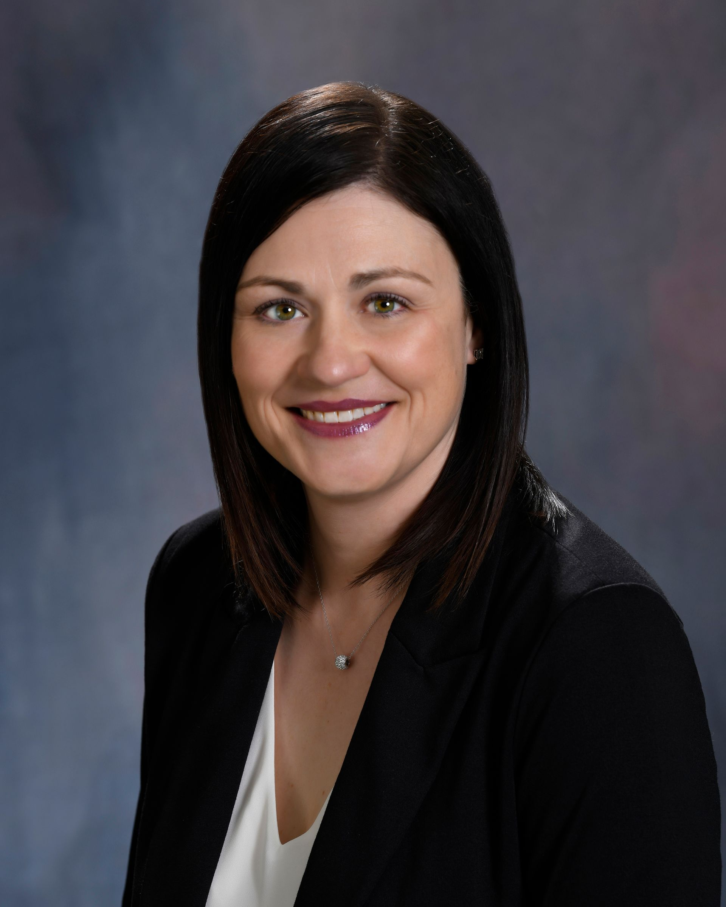

A fresh University of Wisconsin Law graduate, William Morris opened a small office in historic De Pere in 1930. Through every decade since, the firm has carried forward the same standard: enduring client relationships spanning generations across Northeast Wisconsin.
About One Law Group
Founded by William Morris in De Pere in 1930. Today serving Green Bay, Appleton, and Lakewood across seven practice areas.

The Founding Story
In 1930, a young University of Wisconsin Law graduate named William Morris hung his shingle outside a small office in historic De Pere, Wisconsin. He had no roster, no reputation, and no inherited practice. What he had was a degree, a town that needed counsel, and a willingness to serve neighbors on the matters that defined their lives.
Ninety-six years later, the firm he founded continues to operate under that same standard. One Law Group, S.C. traces an unbroken line of stewardship from that 1930 De Pere office to the three locations we serve today: Green Bay, Appleton, and Lakewood. Most law firms in the Green Bay metro can trace their roots only a decade or two. One Law Group precedes the practice of nearly every competitor in Northeast Wisconsin by half a century or more.
The De Pere origin is not a marketing line. It distinguishes the firm from every Green Bay-only practice, every recent Appleton entrant, and every regional chain. A firm that has practiced through the Depression, two world wars, and the entire arc of modern Wisconsin jurisprudence brings a kind of context to a family-law matter or a real-estate closing that a five-year-old shop simply cannot. That context is the inheritance William Morris left behind.
The tagline the firm uses today, "enduring client relationships spanning generations," reflects an operating reality. Many of the families One Law Group represents in 2026 are the grandchildren and great-grandchildren of the families William Morris first served from De Pere in the 1930s and 1940s. That continuity is the moat.
The Roster
Mark A. Bartels, Megan M. Carollo, John P. D'Angelo, and Timothy A. Hawley anchor a roster of ten attorneys serving family law, criminal defense, immigration, personal injury, real estate, business law, and commercial litigation matters across Northeast Wisconsin.
Practice Areas
The firm William Morris started in 1930 has grown into a seven-practice group. The breadth means a Green Bay family can come to One Law Group for an estate matter and the same trusted relationship can support a separate business filing, a real-estate closing, or a personal-injury claim later that decade.
Three Offices
From the De Pere origin office of 1930 grew a three-city footprint that today serves clients across Brown County, Outagamie County, and the Northwoods of Wisconsin.
Discoverability Audit
A 96-year-old firm with three offices and seven practice areas should anchor the answer to the most common legal queries in Northeast Wisconsin. The current discoverability picture tells a different story.
| Search query | Result | What the panel cites instead |
|---|---|---|
| "oldest law firm De Pere" | Not cited | De Pere historical pages and generic directory listings; the 1930 founding moment is nowhere surfaced. |
| "family law attorney Green Bay" | Not cited | Aggregator panels (Avvo, FindLaw, Justia) and three competing firms with paid placement. |
| "law firm Appleton WI" | Not cited | Fox Valley competitors with stronger local-business schema; One Law Group's Appleton office is invisible. |
| "personal injury attorney NE Wisconsin" | Not cited | Regional PI volume firms with dedicated landing pages and review-rich profiles. |
| "immigration attorney Green Bay" | Not cited | Out-of-market firms ranking on broader Wisconsin queries; One Law Group's immigration practice is unsurfaced. |
What We'd Build
The work below addresses each gap in the audit table. The goal is to make the answer panels treat One Law Group as the obvious citation for the queries a Northeast Wisconsin legal prospect actually types.
Why This, Why Now
A prospective family-law client in De Pere in 2026 does not call the firm a friend's grandfather used in 1968. They open a search panel and type a question. Whichever firm the panel cites first gets the consultation. The firm with the 96-year history loses that race to firms with two years on their lease and a sharp local SEO retainer.
The asymmetry is fixable. The 1930 founding moment, the William Morris UW Law fresh-grad story, the De Pere origin office, the three-city footprint, and the multi-generational client base are already true. They are simply not encoded anywhere a machine reader can find them. No founder-story page, no per-attorney schema, no LocalBusiness markup, no FAQ blocks tied to the queries the firm's prospects are actively typing.
Northeast Wisconsin's other regulated heritage practices, the family medical groups, the multi-generational accountancies, and the long-tenured architectural firms, are starting to publish the kind of structured-data infrastructure that the answer panels reward. The firms that publish first own the panel citation for the next several years. The window is open now and it narrows quarter by quarter.
Frequently Asked
Reach the firm at info@onelawgroupsc.com or by phone at any of the three Wisconsin offices listed above.